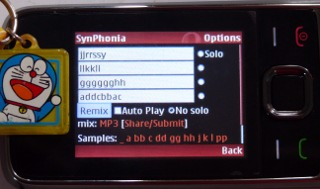

To start playing music right away, just go
here.
Musician: Want to have such a toy with your own sounds?
See here how.
Instructions
Each field in the form represents a track in the mix. You can
fill it with names of sounds you see below. The length of a
sound's name represents its duration (e.g. bb takes
twice longer to play than a). In other words: each
letter represents a musicar bar.
The special sound _ represents silence.
The AutoPlay checkbox can save you the extra click on
the mix's player button (a matter of personal taste).
If you want to hear how a track sounds by itself, you can select the Solo radio button to the right of it, and remix. To go back to the full mix, click on No solo.
Once you have a mix you're proud of, you can use the _Share/Submit_ link in order to share your mix in social and/or submit your mix to us. You'll also see a short url for your mix. You can copy/paste it into mail, chat, etc.
 You can also try j.mp/synpho from your phone. The only difference is that on not-so-smart-phones (like the one in the picture) you won't see the cute little player buttons (this also means the AutoPlay checkbox won't do anything), but you can still click on the links to the mix and the samples, and if your phone can play mp3, you can party.
Enjoy,
@TheRealDod